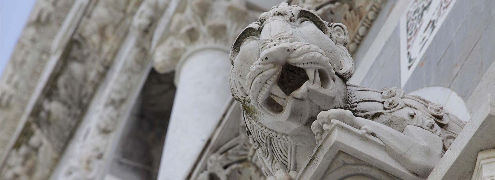
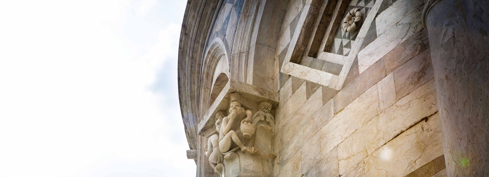

PIZIA


-
Quickly design and customize responsive mobile-first sites with Bootstrap, the world’s most popular front-end open source toolkit, featuring Sass variables and mixins, responsive grid system, extensive prebuilt components, and powerful JavaScript plugins.

Battisterio di San Giovanni
El Battistero di San Giovanni, también conocido como el Baptisterio de San Juan, es un antiguo edificio religioso ubicado en el corazón de la ciudad de Florencia, Italia. Se trata de una estructura de forma octagonal que ha sido un importante sitio religioso y arquitectónico en Florencia a lo largo de los siglos.
Card Title
Catedral de PisaLa Catedral de Pisa, conocida en italiano como "Cattedrale di Santa Maria Assunta" o simplemente "Il Duomo di Pisa," es una iglesia católica ubicada en la ciudad de Pisa, Italia. Esta catedral es uno de los principales monumentos de la Plaza de los Milagros (Piazza dei Miracoli), junto con la famosa Torre Inclinada de Pisa y el Baptisterio de San Juan.

Torre di Pisa
Torre de PisaLa Torre de Pisa es un ícono cultural y arquitectónico que ha atraído a turistas y amantes de la arquitectura de todo el mundo durante siglos debido a su inclinación única y su belleza arquitectónica. Es un testimonio de la habilidad y creatividad de los arquitectos y constructores de la época medieval y un símbolo duradero de la ciudad de Pisa.